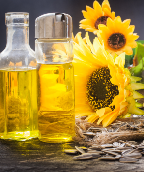

Sunflower oil
Sunflower oil is the non‐volatile oil compressed from the seeds of sunflower (Helianthus annuus). Refined sunflower oil is perfectly clean oil, which preserves all the nutrients during the production process. This oil can be used in conditions of extremely high cooking temperatures. Margarine and cooking fats are made of refined sunflower oil by hydrogenation. Refined sunflower oil is also used in manufacturing of canned food, as well as in soap boiling and paint and varnish industry. Crude sunflower oil has excellent quality and pleasant taste, and is filtered to make it pure from mechanical admixtures. This goldish tasty natural sunflower oil retains all healthy substances and vitamins which the nature gives us. This oil is a valuable food used mostly in natural form, for example, as a salad dressing.
Table of product quality
-
Specification
Specification
Crude sunflower oil
-
Color Number, Mg Iodine
1 — 6 max 20
-
Acid Value, Mg
max 0.60 max 4
-
Peroxide Value, ½ O Millimole/Kg
max 10 max 10
-
Moisture And Volatile Matter
max 0.10 % max 0.20 %
-
Mass Content Of Phosphoric Matters
0,15 – 1 % -
-
Clarity Level
max 5 -
-
Extraction Oil Flash Point, ºC
234 -
-
Fatless Admixtures
None max 0.10 %
-
Mass Content of Phosphoric Matters
None max 0.60 %
-
Soap
None -
-
Packing
0,5L, 1L, 2L, 3L, 5L, 10L PET bottles or 22MT flexitank 0,5L, 1L, 2L, 3L, 5L, 10L PET bottles or 22MT flexitank